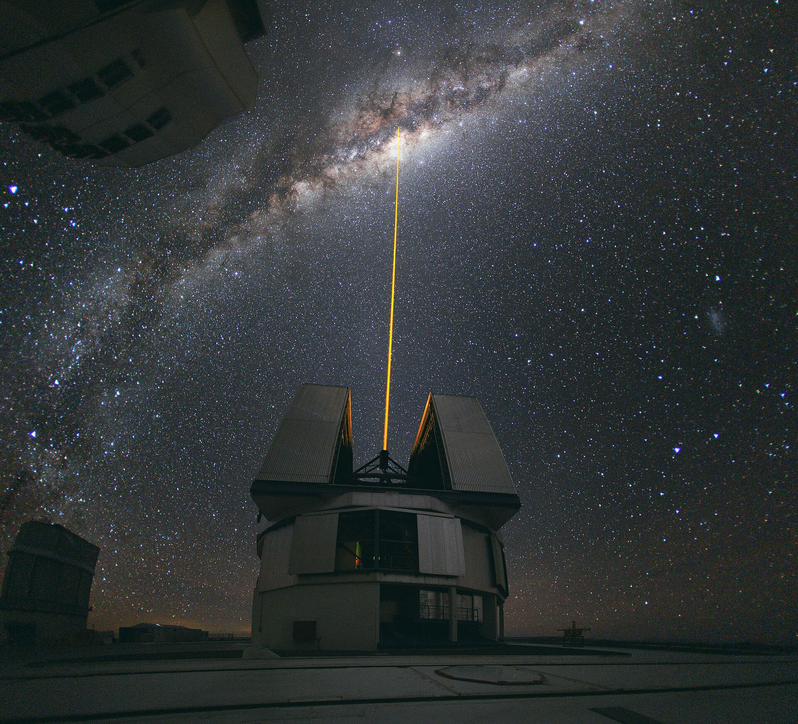
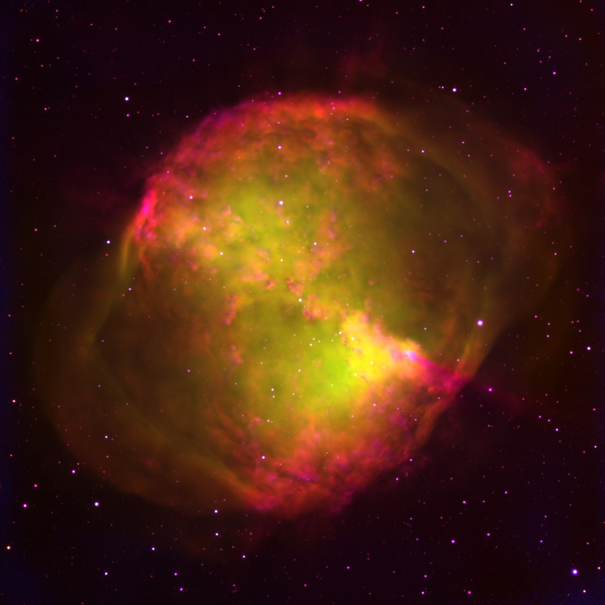

Smart Clipboard
Instant fuzzy search with zero memory leaks. Full formatting support for rich text, image previews, and sensitive item exclusions.
Sub-millisecond recall
Zenith lives quietly in your menu bar with instant clipboard recall, pixel-precision screen capture, Dynamic Island alerts, and encrypted DNS shield.
Zenith consolidates scattered utility apps into a lightweight, unified accessory living in your menu bar.
Instant fuzzy search with zero memory leaks. Full formatting support for rich text, image previews, and sensitive item exclusions.
Area cropping with Loupe 16x pixel magnification, coordinate translation, and editable vector annotation arrows.
Hardware notch HUD on Apple Silicon displays. Drop files into the notch shelf or view transient status capsules.
DNS-over-HTTPS encrypted resolver with TLS ClientHello chunking to safeguard your traffic against eavesdropping.
Every capability was engineered to perform its job without stealing screen space or draining battery cycles.
When capturing UI elements, the Loupe magnifier samples exact RGB coordinates at 16x magnification, copying formatted hex values in one keystroke.

Zenith communicates directly with the Mach kernel to flush memory pressure and purge orphaned application caches without third-party daemons.

Move your cursor across the canvas below to test Zenith's optical loupe magnifier sampling real color values in real time.
Built from scratch with modern Swift concurrency and zero external dynamic library dependencies.
Captures designated window regions directly using Native ScreenCaptureKit with sub-millisecond frame delivery and Retina fidelity.
Keeps up to 500 items in a memory-mapped database with instant keyboard navigation, pinned items, and automatic password exclusion.
Fine-tune privacy shield DoH providers, audio acoustic feedback, and system maintenance parameters with Apple Design Award craftsmanship.
Designed to idle at 0.0% CPU when not in active use, preserving your MacBook battery for what matters.
Sleeps cleanly in the background until invoked via hotkey or status bar click.
No accounts, no analytics telemetry, and no external servers. Your clipboard never leaves your Mac.
Pure AppKit and SwiftUI memory management without heavy Electron or webview wrappers.
Get the standalone universal DMG installer for Apple Silicon and Intel Macs, or build directly from source using the Swift 6 toolchain.